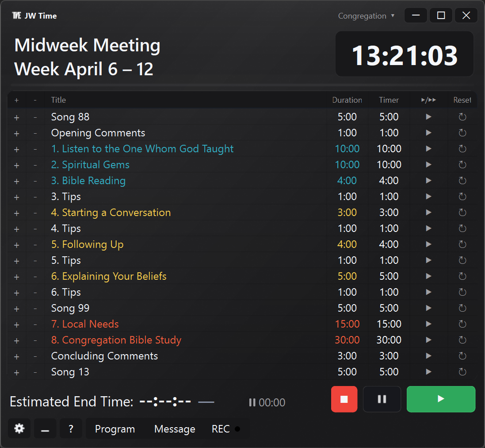

Version 3.0.0 in Kürze
Anpassbarer Timer-Bildschirm, hinzugefügte Versammlungsverwaltung, Fernsteuerung über den Web-Server und eine komplett überarbeitete Benutzeroberfläche.
Mit Version 3.0.0 macht JW Time einen wichtigen Schritt nach vorn.
Die wichtigste Neuerung ist der neue anpassbare Timer-Bildschirm, mit dem sich die Anzeige besser an die eigenen Anforderungen anpassen lässt, ausgehend von bereits fertigen Presets, die sich einfach bearbeiten lassen.
Ergänzend dazu bietet die App jetzt auch die hinzugefügte Versammlungsverwaltung, eine flexiblere Aufnahme und eine einfachere Ersteinrichtung, neben einer komplett überarbeiteten Benutzeroberfläche und einem nützlicheren Web-Server, der nicht nur einen schnelleren Zugriff per Browser erlaubt, sondern auch die Fernsteuerung verschiedener App-Funktionen.

Vorschau der neuen Benutzeroberfläche (3.0-Screenshot in Aktualisierung).
Neuer anpassbarer Timer-Bildschirm NEU
Die wichtigste Neuerung in JW Time 3.0.0 ist das neue System zur Anpassung des Timer-Bildschirms.
Der Timer-Bildschirm ist nicht mehr auf eine feste Darstellung beschränkt. Du kannst ihn an deine Anforderungen anpassen und so eine klarere, besser lesbare Anzeige für deinen Einsatzbereich erhalten.
Damit diese Neuerung von Anfang an leicht nutzbar ist, bietet JW Time auch Start-Presets, mit denen du schnell ein fertiges Layout bekommst. Du musst nicht bei null anfangen: Wähle eine passende Basis, nutze sie direkt oder passe sie bei Bedarf weiter an.
Dieser Ansatz erleichtert die Ersteinrichtung und hilft, in wenigen Schritten ein gutes Ergebnis zu erzielen.
Hinzugefügte Versammlungsverwaltung NEU
Die Versammlungsverwaltung wurde erweitert, damit die Arbeit in unterschiedlichen Situationen einfacher wird, ohne die App jedes Mal von Grund auf neu zu konfigurieren.
In der Praxis kannst du Einstellungen, Vorlieben und versammlungsbezogene Daten besser strukturieren und langfristig übersichtlicher verwalten.
Das hilft besonders dann, wenn mehrere Personen die App verwenden oder wenn schnell zwischen verschiedenen Konfigurationen gewechselt werden muss.
Timer und Programm auch per Fernzugriff steuern NEU
JW Time 3.0.0 macht den Web-Server noch nützlicher: Neben der Browser-Anzeige können jetzt auch verschiedene Timer- und Programmfunktionen aus der Ferne gesteuert werden.
Das macht die Nutzung von einem anderen Gerät im selben lokalen Netzwerk praktischer, besonders wenn schnell reagiert werden muss, ohne direkt am Hauptrechner zu arbeiten.
Der Zugriff ist durch QR auch schneller: So kann der Web-Server direkt auf Smartphone oder Tablet geöffnet werden. Wo verfügbar, kann die Fernsteuerung mit den vorgesehenen Zugangsoptionen geschützt werden.
Komplett überarbeitete Benutzeroberfläche NEU
Auch optisch wurde JW Time aktualisiert: mit einer moderneren, aufgeräumteren und konsistenteren Benutzeroberfläche.
Der neue visuelle Stil verbessert die Gesamtübersicht und macht die verschiedenen Bereiche schneller erfassbar, sowohl im Hauptfenster als auch in den Einstellungsansichten.
Das Ergebnis ist eine stimmigere, zeitgemäßere und einheitlichere Nutzererfahrung in der gesamten Anwendung.
Erweiterte Einstellungen und klarere Ersteinrichtung VERBESSERT
Auch die App-Konfiguration wurde strukturierter und im Alltag nützlicher gestaltet.
Die allgemeinen Einstellungen bieten jetzt einen klareren Zugriff auf wichtige Optionen, einschließlich Layout-Verwaltung des Timer-Bildschirms und Einstellungen rund um die neue Anpassungsfunktion.
Dadurch lässt sich JW Time von Anfang an einfacher einrichten, besonders für Nutzer, die mit fertigen Lösungen starten und nur dort anpassen möchten, wo es wirklich nötig ist.
Flexiblere Aufnahme VERBESSERT
Die Aufnahme wurde flexibler gestaltet, damit sie besser zum realen Ablauf der Zusammenkunft passt, in dem häufig schnelle Anpassungen nötig sind.
Ziel ist es, operative Unterbrechungen zu reduzieren: Pause, Fortsetzen und Gesamtablauf lassen sich leichter steuern, ohne die Kontrolle zu verlieren.
Für Anwender bedeutet das einen komfortableren und besser vorhersehbaren Ablauf mit weniger manuellen Schritten in wichtigen Momenten.
Weitere allgemeine Verbesserungen VERBESSERT
Neben den Hauptneuheiten enthält JW Time 3.0.0 auch mehrere allgemeine Verbesserungen, die die App konsistenter, ordentlicher und angenehmer in der Nutzung machen.
Viele dieser Verfeinerungen verbessern die Gesamtqualität der Nutzererfahrung, mit mehr visueller Kontinuität zwischen den Ansichten und klarerer Konfiguration in verschiedenen Bereichen der App.